오늘의 arXiv Top 15
2026-11-26 (목) · cs.CV / cs.LG / cs.RO / cs.CL / cs.AI New submissions 전수 평가
625
신규 논문
242
cs.CV
143
cs.LG
89
cs.RO
74
cs.CL
77
cs.AI
15
정밀 리뷰
분야별 필터
전체 15개 논문 표시 중
1
78점
SplatWAM: Splatting World Action Models for Real-Time 3D Imagination
World Model
relevance 9/10
Computer Vision and Pattern Recognition (cs.CV)
로봇 world model이 미래를 픽셀이나 latent가 아니라 3D Gaussian 2,048개로 된 상태로 직접 예측하게 해서, 예측한 장면을 어느 시점에서든 rasterization만으로 그려 볼 수 있게 함. OGBench Scene(시뮬레이션 조작 환경)에서 새 시점 rollout을 video world model보다 약 12배 빠르게(약 80 FPS) 그리고 더 높은 PSNR로 만들고, 같은 backbone의 policy가 LIBERO 평균 성공률 92.3%를 냄.
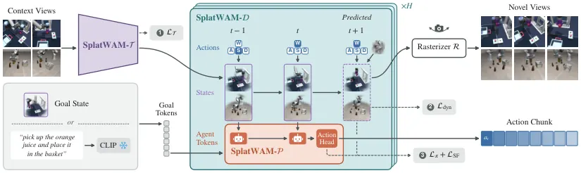
무슨 문제인가
video 생성 기반 world model은 픽셀을 먼저 만들기 때문에 그리퍼가 테이블을 뚫는 것처럼 기하적으로 불가능한 장면을 만들 수 있음. 새 시점을 보려면 시점마다 다시 sampling하거나 생성된 video를 따로 3D로 올려야 하고, 시점끼리 기하가 어긋나는 것을 구조적으로 막지 못함. latent world model은 3D 상태를 드러내지 않아 새 시점을 보려면 별도 decoder가 필요함. 4D Gaussian splatting은 렌더링 가능한 상태를 갖지만 장면마다 최적화하는 재구성이라 action에 따라 미래를 생성하지 못함.
어떻게 푸나
SplatWAM(Splatting World Action Model)은 tokenizer, dynamics, policy 세 부분이 같은 Gaussian 상태를 주고받는 구조임. SplatWAM-T는 카메라 pose가 없는 RGB 여러 장을 fine-tuning한 VGGT backbone에 넣고, 학습된 query 2,048개를 각각 Gaussian 하나(위치, 회전, 크기, 불투명도, 색)로 decode함. query가 장면과 시간에 걸쳐 공유되므로 i번째 Gaussian은 매 frame 같은 index를 가짐. SplatWAM-D는 과거 Gaussian 상태들과 action을 받아 다음 상태를 생성하는 causal transformer임. 학습에는 frame마다 noise 수준을 따로 주는 diffusion forcing과, 큰 denoising step 하나를 작은 step 두 개에 맞추는 Dreamer 4의 shortcut-forcing 목적함수를 씀. 공분산은 quaternion과 scale 대신 log-Euclidean 6차원 좌표로 표현해 부호 모호성을 없애고, 예측 상태를 held-out 시점에서 렌더링한 이미지 loss를 더함. SplatWAM-P는 같은 backbone에 agent token과 flow-matching action head를 붙여, 관측된 Gaussian 상태 이력과 목표(goal 상태 또는 CLIP 문장 embedding)를 읽고 action chunk를 출력함. 학습은 T 단독, T를 고정한 D, D와 P 공동 학습 순서로 진행됨.
결과
- OGBench(오프라인 goal-conditioned 조작 benchmark) Scene에서 16-step open-loop rollout을 held-out 새 시점 3개로 렌더링한 PSNR이 23.37 dB임. video world model인 Cosmos3-Edge(NVIDIA Cosmos 3)의 출력을 SplatWAM-T로 3D로 올린 경우는 21.82 dB, Gaussian 기반 world model인 GWM은 9.18 dB임. 속도는 RTX 5090 batch 1에서 78.8 FPS 대 Cosmos3-Edge 6.6 FPS임. 입력 시점에서는 Cosmos3-Edge가 앞섬(PSNR 25.30 대 24.57 dB, FVD 26 대 173).
- 같은 시작 상태에 정해진 action을 넣고 예측 frame으로 성공을 판정한 반사실 action 시험(과제당 32회)을 함. cube를 서랍에 넣고 서랍을 밀어 넣은 뒤 다시 여는 과제에서 cube가 다시 보이는 비율이 SplatWAM-D 100%, Cosmos3-Edge 38%, iVideoGPT 3%임. cube 밀기 과제는 SplatWAM-D 41%, 두 video model 0%로 모든 모델에게 가장 어려운 과제임.
- 같은 action head와 두 시점 입력으로 model-free policy를 비교함. OGBench 4개 환경 평균 성공률이 Gaussian token 63.4%, 픽셀 49.3%임. LIBERO에서는 65.3% 대 63.0%로 차이가 작고, Object와 Goal suite에서는 픽셀이 앞섬.
- SplatWAM-P(약 1B)는 LIBERO(시뮬레이션 언어 조건 조작 suite 4개) 평균 성공률 92.3%를 냄. robot pretraining 없는 OpenVLA-OFT(약 7B, wrist camera와 proprioception 사용) 91.9%와 비슷하고 WorldVLA 79.1%보다 높음. robot pretraining한 OpenVLA-OFT 97.1%에는 못 미침. OGBench Scene에서는 52%로 물체 keypoint 기반 latent world model인 LPWM 40%보다 높고 value function을 쓰는 HIQL 49%와 비슷함.
한계
모든 실험이 OGBench와 LIBERO 시뮬레이션이고 실로봇 실험은 없음. 학습에 시뮬레이터 상태를 재생해 카메라 9대로 렌더링한 다시점 영상을 쓰므로, 실제 환경에서 같은 감독 신호를 얻기 어려움. policy는 관측된 이력만 읽고 상상한 rollout을 planning에 쓰지 않아, world model의 예측 능력이 control에 얼마나 기여하는지는 직접 보이지 않음. D와 P를 공동 학습하면 입력 시점 16-step rollout PSNR이 24.02 dB에서 22.00 dB로 내려가고, 코드와 checkpoint는 공개 예정이라고만 밝힘.
누리랩 연구와의 연결
- action 조건으로 3DGS 상태를 예측하고 임의 시점에서 렌더링하므로, active perception(NBV)에서 후보 시점을 상상 렌더링으로 미리 평가하는 world model로 쓸 수 있음. object-centric 3DGS world model 연구의 비교 대상임.
- 반사실 action 시험(접촉 시 관통 여부, 서랍 속 물체 유지)은 world model 기반 failure prediction과 counterfactual reasoning의 평가 프로토콜로 그대로 가져다 쓸 수 있음. 상상 rollout을 test-time planning에 쓰는 실험은 이 논문에 없어 직접 검증이 필요함.
2
74점
Long-Horizon Planning with Latent World Models via Graph Anchors
World Model
relevance 9/10
CoRL 양식 (추정)
Robotics (cs.RO)
frozen latent world model의 planner가 먼 목표 이미지 대신 기록된 경로 위 몇 걸음 앞의 학습 frame을 겨누게 하는 training-free planner Graph Anchors를 제안함. 200 step 떨어진 PointMaze-Medium(점 agent가 미로를 지나 목표로 가는 과제) 목표에서 기존 latent world model LeWM의 성공률을 13%에서 85%로 올림.
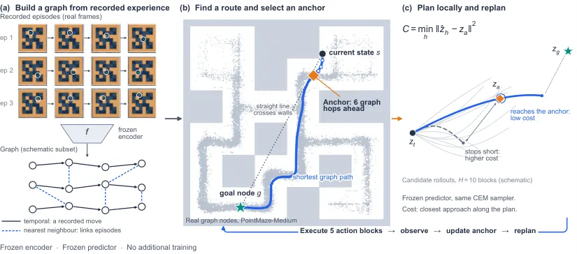
무슨 문제인가
latent world model planner는 예측한 마지막 latent와 목표 이미지 latent의 거리가 가장 작은 action sequence를 고름. 이 방식은 25 step 정도 가까운 목표에서는 잘 되지만, 목표가 멀어지면 LeWM(LeWorldModel: pixel에서 encoder와 predictor를 함께 학습한 latent world model)의 성공률이 크게 내림. 저자들은 원인을 두 가지로 나눔. 첫째는 range 실패로, latent 거리가 목표 근처 몇 걸음 밖에서는 어느 쪽이 목표에 가까운지 구분하지 못함. 둘째는 focus 실패로, 이미지 전체 거리가 작은 조작 물체보다 큰 로봇 팔의 위치를 더 크게 반영해 접촉 과제에서 물체를 놓고 팔만 맞춤.
어떻게 푸나
먼저 기록된 데이터에서 planner 없이 진단을 함. 목표에서 h hop 떨어진 상태의 두 이웃 중 실제로 더 가까운 쪽의 latent 거리가 더 작게 나오는 비율(ranking accuracy ρ)을 잼. 이 진단을 바탕으로 Graph Anchors는 world model의 학습 frame을 5 step마다 node로 삼아 sparse graph를 한 번 만듦. 같은 episode의 연속 frame은 방향 있는 temporal edge로, 다른 episode의 가까운 latent(10-NN, 한 action block 거리의 중앙값 이내)는 neighbour edge로 잇음. 매 replanning마다 현재 관측과 목표 이미지를 가장 가까운 node에 붙이고, 최단 경로에서 K hop 앞의 node를 anchor로 골라 CEM(Cross-Entropy Method, 샘플링 기반 action 최적화)의 목표로 씀. 접촉 과제에서는 다른 episode로 건너뛰는 edge에 가중치 λ=3을 매겨 기록된 밀기 동작이 이어지는 경로를 고름. 마지막으로 rollout을 마지막 step이 아니라 anchor에 가장 가까이 간 step으로 평가해 anchor를 지나쳐 가게 함. encoder, predictor, CEM 설정은 LeWM 그대로이고 바뀌는 것은 목표와 점수 규칙뿐임.
결과
- 진단: 모든 navigation 환경에서 ρ가 목표 바로 옆에서는 1에 가깝다가 6 hop 안에 우연 수준(0.5)에 가까운 0.50~0.59로 내림. raw pixel부터 V-JEPA 2까지 encoder 6종에서 같은 양상임. Meta-World(시뮬레이션 로봇 팔 조작 과제 모음) 9개 과제에서 손만 5cm 옮긴 비용이 물체만 목표에서 벗어난 비용보다 2.6~14배 큼. 원래 cost는 물체 episode 72개 중 0개를 풀고, demonstration에서 20 step 앞 frame을 겨누면 65개를 풂.
- 먼 목표 성공률(목표까지 step 수의 2배 budget, 50쌍 3 seed): PointMaze-Large(점 agent가 큰 미로를 지나 목표 이미지 위치로 가는 과제) 400 step에서 LeWM 8%가 87%로 오름. Push-T(평면에서 T자 블록을 밀어 목표 자세에 맞추는 과제) 150 step에서는 LeWM 5%가 접촉 설정 71%로 오름.
- 같은 LeWM 탐색을 anchor로 겨누기만 해도 PointMaze-Medium 200 step 성공률이 12%에서 85%로 오름. 이 12%는 구성 요소 제거 실험의 별도 실행 값이고, 본 비교표의 LeWM 값은 13%임. 마지막 step 대신 최근접 step으로 평가하는 탐색을 먼 목표에 그대로 쓰면 9%임. horizon을 2배, CEM sample을 3배 넘게 늘려도 28%에 그침.
- 다시 구현한 training-free planner와 같은 checkpoint·같은 목표 쌍으로 비교함. Push-T 150 step에서 AP(Anchored Planning: 실제 step 수 d를 받아 학습 episode 한 구간을 검색하는 방법)는 65%임. 같은 조건에서 다른 training-free planner인 NGC는 11%, Metro-WM은 33%임. AP는 d를 0.5배로 잘못 주면 16%로 내림. OGBench-Cube(블록 집기·옮기기)에서는 Graph Anchors의 contact 설정이 navigation 설정의 26%에서 39%로 오르지만 AP의 53%보다 낮음. 모든 실험은 시뮬레이션이고 실로봇 실험은 없음.
한계
anchor를 쓰려면 학습 데이터가 목표까지의 경로를 덮어야 하고, 과제마다 navigation(K=6, λ=1)과 contact(K=2, λ=3) 설정을 골라야 함. contact 설정은 Reacher에서 68%를 54%로 낮추고, 6 hop 앞 anchor에 정확히 도달하지 못하는 다른 latent world model PLDM과 DINO-WM은 PointMaze-Medium에서 4%, 20%에 그침. 환경은 2D 미로, Push-T, Cube, Reacher 같은 시뮬레이션뿐이고, 본문에 프로젝트 페이지와 코드가 있다고 적혀 있으나 주소는 텍스트에서 확인 불가임.
누리랩 연구와의 연결
- world model 기반 test-time planning에서 goal cost가 언제 방향 정보를 잃는지를 planner 없이 offline으로 재는 진단 방법(ρ, graph 거리와 성공률의 Spearman −0.90)임. world model planner의 실패를 미리 예측하는 failure diagnosis 도구로 가져다 쓸 수 있음.
- 학습 데이터의 frame graph를 subgoal 기억으로 쓰는 방식은 robot memory, long-horizon planning 연구와 바로 이어짐. 손 대 물체 비용 비율을 잰 focus 분석은 object-centric 표현이 manipulation planning cost에 필요한 이유를 보여 주는 근거로 쓸 수 있음.
3
73점
Keep or Roll Back? Out-of-Loop Judges for Self-Improving VLA and End-to-End Embodied Policies
Embodied AI
relevance 9/10
Artificial Intelligence (cs.AI)
VLA·주행 policy의 self-improvement loop에서 새 policy를 남길지 정하는 판정을 학습용 judge에서 떼어 내, improver가 볼 수 없는 sealed judge 위의 sequential test로 결정하게 함. 실제 gain이 알려진 주행 policy 쌍 76개(gain 12개, 손실 59개, 차이가 0에 가까운 5개)에서 이 test는 gain 12개 중 11개를 받아들이고, 손실 59개와 0에 가까운 5개는 하나도 받아들이지 않음.
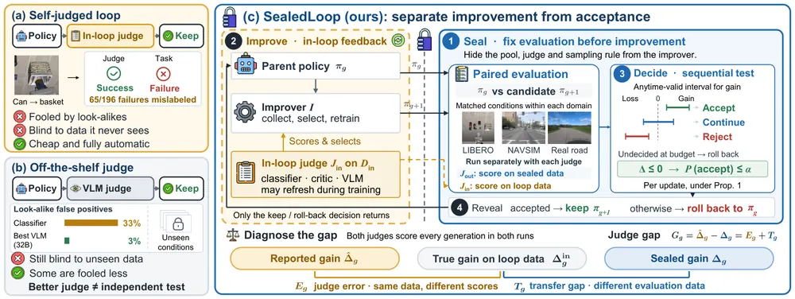
무슨 문제인가
Self-improvement loop는 policy가 rollout하고, judge가 episode를 채점하고, 좋게 채점된 데이터로 policy를 다시 학습하는 과정을 반복함. 대부분의 loop에서는 학습 신호를 주는 judge가 새 policy를 남길지(keep) 되돌릴지(roll back)도 정하므로, 판정 근거가 policy와 독립적이지 않음. 저자들은 loop가 보고한 gain이 독립 평가와 어긋나는 원인을 둘로 나눔. judge가 loop 자신의 데이터에서 성능을 잘못 재는 judge error와, loop 데이터에서의 진짜 gain이 처음 보는 조건으로 이어지지 않는 transfer gap임. 저자들이 조사한 embodied loop 56개 중 세대별 성능 곡선과 judge exploitation 사례를 함께 정량화한 연구는 없었음.
어떻게 푸나
SealedLoop은 loop 바깥에 sealed judge를 둠. sealed judge는 평가 조건 pool, judge 파라미터, 표본 추출 규칙이 improver(후보 policy를 학습하는 loop 쪽 과정)에게 숨겨진 평가자이며, 세대마다 improver가 돌기 전에 고정됨. improver는 in-loop judge(success classifier, 학습된 critic, VLM 등)만 써서 후보 policy를 만듦. 판정 단계에서는 이전 policy와 후보를 같은 조건 쌍에서 돌리고, 쌍별 점수 차이로 betting confidence sequence(언제 멈춰 읽어도 신뢰수준이 유지되는 구간 추정)를 갱신함. 구간 하한이 0보다 크면 accept, 상한이 0보다 작으면 reject, budget까지 결론이 안 나면 roll back함. 조건이 policy와 독립으로 뽑히면 손해인 후보를 받아들일 확률이 α(실험에서 0.05) 이하로 묶임(Proposition 1). 같은 loop를 in-loop judge가 결정하는 경우와 sealed judge가 결정하는 경우로 따로 돌리고, 두 judge가 모든 세대를 채점함. 그래서 보고된 gain과 sealed gain의 차이(judge gap)를 세대마다 judge error와 transfer gap으로 나눠 잼.
결과
- LIBERO-Object(시뮬레이션에서 물체를 집어 바구니에 넣는 조작 과제 모음) 3개 과제에서 OpenVLA-OFT를 rejection-sampling fine-tuning으로 개선함. 한 세대에서 success classifier가 실패 196개 중 65개를 성공으로 판정함(물체가 바구니 가장자리에 걸린 경우). sealed judge가 결정하면 후보 45개 중 12개가 남음. sealed test가 확인한 이들의 성공률 상승(certified gain)은 평균 0.147임. classifier가 결정하면 sealed test가 손해로 확인한 후보 1개를 남기고, certified gain이 있는 후보 3개를 버림.
- 기성 judge로 바꿔도 해결되지 않음. 가장 큰 Qwen3-VL-32B는 같은 세대에서 실패를 3%만 받아들여 classifier의 33%보다 낮음. 대신 진짜 성공도 많이 거부해(true-positive rate 0.69) 시뮬레이터의 성공 판정 규칙(success predicate)과 결정이 일치한 세대가 38개 중 26개로, classifier의 35개보다 적음.
- NAVSIM(기록된 주행 로그에서 계획 궤적을 채점하는 driving benchmark) DiffusionDrive loop에서 transfer gap이 나타남. 공개 checkpoint에서 시작한 run의 PDMS(NAVSIM의 0~1 rule-based 주행 점수)가 loop 평가 frame에서 0.047~0.058 오르고, 학습에 없던 Boston에서 0.075~0.107 내림. loop frame의 진짜 점수로 판정해도, 공개 checkpoint에서 시작한 이 control run의 세대 15개 중 8개를 받아들임. 개선이 실제로 일어나는 loop에서 최종 Boston PDMS는 0.638에서 sealed judge 결정 시 0.674, critic 결정 시 0.649가 됨.
- 실차 실험은 loop가 아니라 공개된 개선 단계 하나(ReCogDrive의 IL 버전에서 RL 버전으로, NAVSIM 점수가 0.861에서 0.904로 오름)를 실제 도로에서 비교함. 전기 밴으로 144 m 좌회전 경로를 blind pair 6쌍 주행했고, 12회 모두 경로를 완주하지 못함. RL 버전이 6쌍 모두 커브에 더 깊이 들어가 첫 개입 지점이 평균 41.2 m에서 51.6 m로 늘었음(one-sided sign test p=0.016). 다만 sequential test는 6쌍으로 결론을 내지 못함.
한계
self-improvement loop는 모두 시뮬레이션에서만 돌렸고, 짧은 조작 과제 3개와 다른 차량이 반응하지 않는 로그 재생 driving benchmark 하나, 각각 improver 하나뿐임. 조작 실험의 sealed judge는 시뮬레이터의 success predicate로, 실제 로봇에는 이것이 없음. success predicate를 대신할 sealed judge로 시험한 Qwen2.5-VL-7B는 false-positive rate가 0.24로 오차가 큼. 실차 실험은 차량 하나에서 개선 단계 하나를 장애물 없는 경로로 시험했고, 코드 공개 여부는 본문에서 확인 불가함.
누리랩 연구와의 연결
- VLA를 RL이나 자기 데이터로 계속 fine-tuning하는 연구에서 success classifier·VLM judge가 겉보기 성공(look-alike failure)을 받아들이는 정도를 세대별로 재는 평가 절차로 바로 쓸 수 있음. failure detection용 VLM judge를 만들 때 false-positive와 true-positive를 함께 보고해야 하는 근거가 됨.
- 학습용 judge와 수용 판정을 분리하고 anytime-valid sequential test로 평가량을 줄이는 방식임. 실로봇 평가 횟수가 적은 test-time adaptation이나 world model 기반 policy 개선의 keep/roll back 판정에 옮겨 쓸 수 있음.
4
72점
Most of the Way There: Turning a Strong Video Prior into an Action-Conditioned World Model
World Model
relevance 9/10
Computer Vision and Pattern Recognition (cs.CV)
33B video 생성 모델을 고정한 채 0.34% 파라미터만 학습해 로봇 행동을 조건으로 미래 영상을 예측하는 world model로 바꿈. 학습을 높은 noise 구간에 몰아준 것만으로 validation 평균 점수가 52.69에서 61.15로 오름.
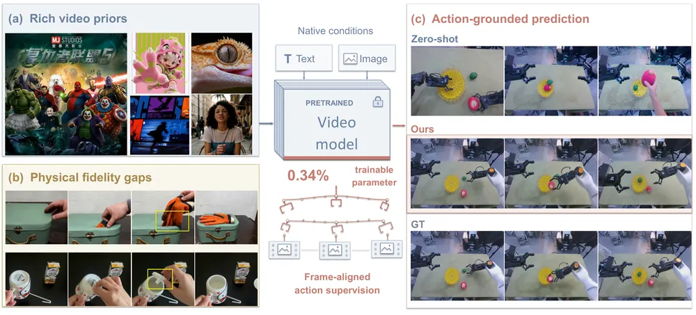
무슨 문제인가
최근 video 생성 모델은 그럴듯한 장면은 잘 만들지만, 특정 로봇 행동이 낳는 물리적 결과까지 맞히지는 못함. 같은 '잡아라' 지시라도 실제 실행에 따라 성공, 빗나감, 물체 무반응으로 갈리므로 action-conditioned world model(ACWM)은 행동별 결과를 예측해야 함. 기존 로봇 ACWM은 full fine-tuning, 카메라 calibration이 필요한 렌더링 action map, 별도 memory module, 수천 시간 로봇 데이터를 더해 왔음. 이 설계들은 모두 14B 이하 prior 위에서 나왔고, 더 강한 prior에서는 무엇이 꼭 필요한지 따져 본 연구가 없었음.
어떻게 푸나
Dianjing은 MiniMax H3(33B video foundation model)를 고정하고 rank-32 LoRA와 action projection만 학습함(약 114M, 0.34%). 입력은 첫 이미지, 선택적 text, 로봇 action 열이고 출력은 미래 영상임. 먼저 AgiBot G2(52차원)와 YAM(14차원)의 명령을 forward kinematics로 양팔 end-effector 상대·절대 pose와 gripper 값의 30차원 벡터(EEF30)로 바꿈. 이 벡터는 블록마다 zero-init 선형층을 거쳐 기존 AdaLN(noise 수준에 따라 layer norm을 조절하는 경로)의 shift·scale·gate에 더해짐. 학습은 flow-matching 목적을 그대로 두고 timestep 분포를 높은 noise 쪽으로 옮겨, 학습 신호의 절반 이상이 σ≥0.9에 오게 함. 긴 rollout은 124 frame 단위로 이어 만들며, 앞 구간의 마지막 clean latent 3개를 H3의 기존 reference 경로로 다음 구간에 넘김.
결과
- WorldOracle(예측 영상을 같은 action의 실제 로봇 실행 영상과 비교하는 benchmark) 공식 test의 SV 점수로 잼. SV(single-view score)는 물리 상태 정확도, 상호작용 영역 충실도, 상호작용 공간 정렬 점수의 평균임. 5개 track 중 4개에서 1위이고, AgiBot-Core는 73.48로 GE-Sim 2.0의 73.20과 거의 같음. YAM-Core는 70.71로 2위보다 7.7점 높음. 사람이 조작한 긴 rollout을 평가하는 AgiBot-Long track에서는 56.43으로 GE-Sim 2.0의 62.57보다 낮음.
- 학습 데이터는 약 65시간으로, 기존 로봇 world model인 GE-Sim 2.0(>1k 시간), GigaWorld-1(12,980시간), DreamDojo(44.7k 시간)보다 훨씬 적음.
- validation 47 episode 단계별 ablation에서 평균 SV가 zero-shot 24.49, 영상만 학습 38.65, EEF30 action 추가 52.69, high-noise 학습 61.15, 기존 reference 경로 사용 63.33으로 오름.
- 같은 backbone에 기존 설계를 옮겨 붙인 비교에서 trajectory map은 1.5점, action에 classifier-free guidance를 거는 action CFG는 3.6점 내림. 별도 action token은 high-noise 학습 뒤 0.4점 내림.
한계
평가는 기록된 실제 실행 영상과의 offline 비교뿐이고, 이 world model로 policy를 평가하거나 planning에 쓴 실험은 없음. 긴 rollout에서 Core 대비 점수가 크게 내리고 물체 위치·자세 오차가 누적됨. 본문에 코드 공개 언급이 없고, 33B backbone을 H20 GPU 32장으로 학습해 재현 비용이 큼.
누리랩 연구와의 연결
- 강한 video prior 위에서는 action 주입 방식보다 학습을 어느 noise 구간에 몰아주는지가 더 중요하다는 ablation은 world model 기반 policy 평가와 test-time planning을 설계할 때 바로 참고할 수 있음.
- 팔 동작은 맞아도 물체 상태가 틀리는 사례(수건 걸기)는 world model로 failure detection을 할 때 무엇을 검증해야 하는지 보여 줌.
5
72점
Beyond the Happy Path: Generalizing Robot World Models from Simulated Failures
World Model
relevance 9/10
Robotics (cs.RO)
성공 demonstration 위주로 학습된 로봇 world model이 잡기 실패 장면을 못 그리는 문제를, 시뮬레이션에서 일부러 만든 실패 궤적 약 62,000개와 물리 정답 기반 보조 loss 두 개로 post-training해 줄임. 사전학습된 영상 world model인 Cosmos3 Nano의 물체 궤적 평균 픽셀 오차(object ADE)를 9.07픽셀에서 6.51픽셀로 28.2% 낮춤.
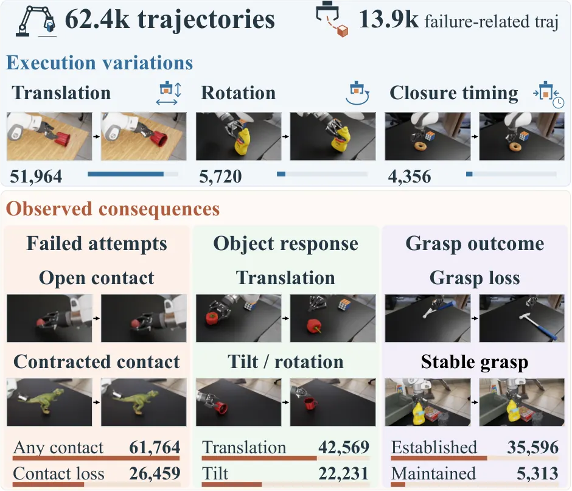
무슨 문제인가
action-conditioned world model은 policy 평가와 planning에서 실제 rollout을 대신하는 용도로 쓰이므로, 행동이 다르면 결과가 다르게 나와야 함. 그런데 로봇 학습 데이터는 성공 demonstration이 대부분이라, 잡기가 조금 어긋나 물체가 밀리거나 기울거나 미끄러지는 장면을 거의 보지 못함. 저자 측정에서 사전학습 모델 5개의 물체 궤적 오차는 첫 frame을 그대로 복사하는 static baseline보다 많아야 10.4% 낮았고, 2개는 오히려 더 나빴음. 실패 데이터로 fine-tuning한 기존 연구도 있으나, 접촉 영역은 화면의 작은 부분이라 전역 reconstruction loss에서 비중이 작음. 또 성공·실패 같은 결과 수준 신호는 물체가 어떻게 움직였는지는 알려 주지 않음.
어떻게 푸나
먼저 Reforge dataset을 만듦. 시뮬레이션에서 RoboLab과 motion planner cuRobo로 성공하는 기준 잡기 궤적을 만든 뒤, end-effector 위치, 회전, gripper closure 시점을 흔들어 성공·실패 궤적 62,125개(물체 96종)를 얻음. 각 궤적에는 RGB 영상과 함께 물체 pose, 접촉 여부, 물체 표면 점의 위치가 정답으로 기록됨. 실제 실패 궤적 300개(물체 10종, Reforge-Real)는 평가에만 씀. WorldReforge는 이 정답으로 기존 flow matching 생성 loss에 보조 loss 두 개를 더하는 post-training 방법임. 입력은 첫 관측 영상과 기록된 end-effector pose·gripper 상태이고, 출력은 카메라 3대(wrist, 왼쪽 어깨, 오른쪽 어깨)에서 본 미래 16 frame의 RGB 영상임. Interaction Alignment(IA)는 물체와 접촉 주변을 덮는 soft mask 안에서만 복원 오차를 재고, mask 면적으로 나눠 작은 영역도 따로 학습 신호를 받게 함. Surface Correspondence(SC)는 backbone 중간 feature에서 첫 frame의 표면 점 feature를 뽑아 미래 wrist-view feature와 cosine 유사도로 soft matching함. 이렇게 찾은 위치가 시뮬레이터로 투영한 정답 궤적과 맞도록 학습시킴. 두 loss 모두 학습 때만 쓰이므로 추론 시 파라미터나 구조는 바뀌지 않음.
결과
- 물체 궤적 오차(object ADE, 생성 영상에 CoTracker를 돌려 시뮬레이터 정답과 비교한 픽셀 오차)를 Reforge-Eval(시뮬레이션 평가 clip)에서 잼. Cosmos3 Nano 기준 사전학습 9.07, 같은 데이터에 생성 loss만 쓴 Reforge 6.81, WorldReforge 6.51임. 데이터만으로 오차가 약 25% 줄고, IA·SC가 4.4%를 더 줄임. post-training에 없던 물체에서는 9.86픽셀에서 6.41픽셀로 내림.
- 같은 첫 장면에서 다른 행동을 준 100쌍으로, 두 미래의 차이를 얼마나 맞게 그리는지 RDE(Response Difference Error)로 잼. 사전학습 Cosmos3 Nano는 7.35로 static baseline 6.06보다 나쁨. WorldReforge는 4.17로 사전학습보다 43.3% 낮고 Reforge 4.34와는 차이가 작음.
- segment 6,400개로 돌린 소규모 ablation에서 object ADE는 Reforge 7.02, IA만 6.84, SC만 6.81, 둘 다 6.59임. SC 정답을 CoTracker pseudo-label로 바꾸면 6.87로 오름.
- 시뮬레이션에서만 학습했는데 실제 영상 복원 PSNR이 DROID(실제 로봇 조작 영상 모음)에서 20.38에서 21.42dB로, Reforge-Real에서 20.80에서 21.48dB로 오름. 실제 영상에서는 물체 궤적 정답이 없어 PSNR·SSIM과 VLM 판정 품질만 잼.
한계
world model을 policy 평가, planning, closed-loop 제어에 실제로 써서 나아지는지는 보이지 않았고, 저자도 향후 과제로 남김. 실제 데이터는 평가에만 쓰였고 지표가 PSNR 위주라 실제 실패 상황의 물체 움직임 정확도는 확인되지 않음. 사람 영상의 지식을 로봇으로 옮기는 다른 world model인 DreamDojo는 같은 post-training 후 object ADE가 9.57에서 11.62로 오히려 나빠짐. IA·SC가 Reforge 대비 더하는 이득은 2~5% 수준임. 반복 실행 편차는 본문에서 확인 불가함. 데이터·코드는 공개 시 내놓겠다고 적혀 있음.
누리랩 연구와의 연결
- world model이 실패 장면을 못 그리면 이를 쓰는 policy 평가와 failure detection이 성공 쪽으로 치우침. 이 진단과 paired-action RDE 지표는 world model 기반 failure 예측 연구의 평가 설계에 바로 쓸 수 있음.
- 성공 데이터는 잡은 상태 유지를, 실패 접촉 데이터는 물체 반응을 가르친다는 데이터 구성 분석은 counterfactual rollout용 world model 학습 데이터를 어떻게 섞을지 정할 때 근거가 됨.
6
72점
Skeptic: Grounding Failure Diagnosis for Robot Skill Discovery
Embodied AI
relevance 8/10
Robotics (cs.RO)
로봇 프로그램을 고쳐 가며 skill을 쌓는 코딩 agent가 실패 한 번을 '물리적으로 불가능함'으로 잘못 결론 내리는 문제를, 센서로 잰 동작 결과 기록과 성공 기반 skill 등록 규칙으로 줄임. 가중치를 고정한 Qwen3.8-27B의 LIBERO-Pro 80개 과제 held-out 성공률이 63.4%에서 78.3%로 오름.
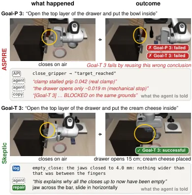
무슨 문제인가
code-as-policy 방식의 agentic skill discovery에서는 언어 모델이 로봇 프로그램을 실행하고, 실패 기록을 보고 고치고, 교훈을 공유 skill library에 남김. 그런데 API 호출이 완료되었다는 반환값은 의도한 접촉이 실제로 일어났다는 뜻이 아님. 저자들이 관찰한 Qwen3.8-27B는 gripper가 허공을 잡은 실패를 '서랍이 기계적으로 막힘'으로 해석하고, 같은 서랍을 쓰는 다른 과제까지 같은 이유로 종료함. 이런 잘못된 불가능 판정은 수정 예산이 남았는데도 탐색을 끝내고, library에 들어가면 뒤 과제의 시도까지 막음.
어떻게 푸나
SKEPTIC은 학습 없이 기존 ASPIRE 프로토콜에 두 장치를 더함. ASPIRE는 coordinator·worker·verifier가 같은 언어 모델로 과제별 프로그램을 고치고, verifier가 재현한 교훈을 공유 skill library에 쌓는 방식임. 첫 장치인 grounded event log는 실패한 개발 실행의 primitive 호출 기록, 매 step proprioception, 동작 시점 depth 영상을 입력으로 받아 텍스트 로그를 만듦. 로그에는 이동이 목표에 닿았는지와 남은 거리, gripper jaw가 멈춘 폭과 손가락 사이 표면 유무, 분할된 물체가 최종적으로 어디 있는지가 적힘. 항목마다 [proprio]·[vision]·[inferred] 표시를 달아 센서 관측과 추론된 진단을 구분함. 두 번째 장치인 verified promotion은 skill 제안을 등록할 때 verifier 재현에 더해, 제안을 낸 원래 프로그램이 개발 seed에서 기준 이상 성공했는지를 요구함(LIBERO-Pro에서 15개 중 8개 이상). 등록 판정은 agent가 수정할 수 없는 별도 서비스가 실행 기록에서 성공률을 계산해 내림.
결과
- LIBERO-Pro(LIBERO 조작 과제에 물체 위치와 지시 문장 변형을 넣은 시뮬레이션 benchmark) 80개 과제에서 과제당 held-out seed 50개의 성공률을 잼. ASPIRE 63.4%에서 SKEPTIC 78.3%로 14.9퍼센트포인트 오름(과제 bootstrap 95% CI 8.4~21.6). 같은 모델·시작 library·수정 예산이며, 프로토콜마다 campaign 2회의 평균임. campaign은 80개 과제를 정해진 순서로 풀며 skill library를 따로 쌓는 실행 한 번임.
- 저자들이 Object·Goal·Spatial 60개 과제의 실패 기록을 직접 읽어 셈한 결과, 잘못된 불가능 판정이 나온 과제가 campaign당 19.5개에서 8.5개로 줄어듦. 그 판정 뒤 80% 미만으로 끝난 과제는 14.0개에서 4.5개로 줄어듦. verified promotion만 넣으면 잘못된 판정은 16개로 거의 그대로이고, 판정 자체를 줄인 것은 event log임.
- 같은 60개 과제의 ablation에서 성공률은 ASPIRE 70.1%, verified promotion만 81.3%, event log만 80.8%, 전체 86.9%임.
- Robosuite(단일 팔 5개와 양팔 2개로 된 시뮬레이션 조작 과제) 7개에서 과제당 100 seed 평균 성공률이 35.3%에서 47.0%로 오름. 상승분 대부분은 큐브 다시 쌓기(62%에서 97%)와 양팔 들기(0%에서 29%)에서 나오고, nut assembly는 두 방법 모두 0%임. 모든 실험은 시뮬레이션이며 실로봇 과제는 없음.
한계
실험은 Qwen3.8-27B 한 모델과 시뮬레이션 benchmark 2개뿐이고, 비슷한 크기의 다른 open-weight 모델 5개는 원래 discovery loop 자체를 돌리지 못해 비교에서 빠짐. log는 손 움직임·jaw 폭·분할 물체의 depth 변화만 재므로 knob 각도 같은 관절 상태나 지시가 뜻하는 목표 영역은 잡지 못함. 그래서 ASPIRE가 풀던 과제 2개를 SKEPTIC campaign이 불가능으로 판정하고 끝낸 사례가 있음. 본문 1쪽에 'Project Page & Code' 문구는 있으나 텍스트에서 주소는 확인 불가임.
누리랩 연구와의 연결
- failure diagnosis를 VLM의 추론이 아니라 실행 측정값에 묶은 사례임. 센서 관측과 추론을 표시로 나누는 로그 형식은 VLA rollout의 실패 원인 분석과 recovery 연구에 바로 가져다 쓸 수 있음.
- 실패 경험이 '불가능' 교훈으로 memory에 들어가 뒤 과제를 막는 현상과, source 프로그램 성공률로 등록을 막는 규칙은 robot memory·skill library 설계에서 비교 대상이 됨.
7
71점
Dynamic Forcing: Learning Action-Grounded Sparse Dynamic Representations with Dense Future Guidance for World Action Models
World Model
relevance 9/10
Computer Vision and Pattern Recognition (cs.CV)
world action model이 미래 영상 전체를 만들지 않고, 현재 관측 옆에 변화만 담는 소수의 dynamic token을 붙여 행동을 만들게 함. LIBERO-Plus 성공률 77.9%로 같은 계열 WAM 중 가장 높았고, 지연시간은 Faster-WAM의 172.8ms에서 158.5ms로 줄어듦.
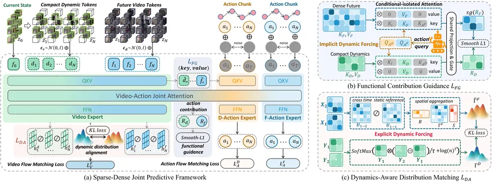
무슨 문제인가
world action model(WAM)은 미래 장면을 예측하는 video model 위에서 행동을 만드는 policy임. 미래 영상을 촘촘히 만들면 시공간 token이 많아져 추론 비용이 큼. 미래 예측을 추론에서 빼 버린 Fast-WAM은 빠르지만, 후속 평가에서 분포 이동에 약해진다는 보고가 있었음. Faster-WAM은 영상 expert를 한 번만 통과시켜 미래 조건을 유지하는 후속 방법이고, Fast-WAM-Joint는 Fast-WAM 논문의 변형임. 저자들은 dense future가 현재 관측에 이미 있는 정적 배경을 반복해 담고, action expert의 attention은 물체가 움직이는 좁은 영역에 몰린다는 관찰에서 출발함.
어떻게 푸나
CompactWAM은 Wan2.2-TI2V-5B video backbone 하나를 dense 경로와 sparse 경로가 공유하는 구조임. 입력은 현재 관측과 언어 지시이고, 출력은 32-step action chunk임. sparse 경로의 compact dynamic token은 현재 관측을 겹치지 않는 영역 R개로 평균 낸 값에 noise를 섞어 만들고, 영역 중심 좌표와 미래 시점을 3D rotary position embedding(3D-RoPE)으로 붙임. 학습 때 dense 경로는 미래 영상과 행동을 예측하고, sparse 경로는 영상 복원 loss 없이 자기 action expert의 행동 loss로만 학습됨. attention mask로 sparse token이 dense future feature를 보지 못하게 막음. 여기에 Dynamic Forcing이라는 두 가지 보조 loss를 더함. FG(action functional guidance)는 두 action expert의 attention 출력에서 예측 문맥이 기여한 부분만 떼어 sparse 쪽을 dense 쪽에 맞춤. DA(dynamics-aware distribution matching)는 다른 시점 간 feature 유사도를 같은 시점 유사도로 원소별로 나눈 뒤 정규화한 분포를 만들고, sparse 분포를 dense 분포에 KL로 맞춤. 추론 때는 dense 경로를 버리고 현재 관측과 dynamic token을 한 번의 visual forward로 encode한 뒤 KV cache로 행동을 denoising함.
결과
- LIBERO-Plus(LIBERO 학습 policy를 카메라·로봇·조명·배경 등 7종 교란 아래 추가 학습 없이 평가)에서 CompactWAM 77.9%, Faster-WAM 73.6%, Fast-WAM-Joint 66.3%, Fast-WAM 49.1%임. LIBERO(조작 과제 40개) 평균은 98.4%로 Faster-WAM 99.0%보다 0.6퍼센트포인트 낮음. 기본 dynamic token 36개 기준임.
- 같은 학습 augmentation으로 baseline을 다시 학습한 부록 비교에서는 LIBERO-Plus 차이가 줄어듦. CompactWAM 77.9%, Faster-WAM 74.3%, Fast-WAM 64.1%임. 본문 표의 Fast-WAM 대비 28.8퍼센트포인트 향상에는 학습 설정 차이가 섞여 있음.
- 같은 checkpoint에서 추론 경로만 바꾼 비교에서 LIBERO-Plus 성공률은 sparse 경로 77.9%, dense 경로 79.4%, dynamic token 제거 5.7%임. dynamic token 18개(dense future token의 9.2%)로도 76.6%를 유지함. H20 GPU 지연시간은 158.5ms로 Faster-WAM 172.8ms, Fast-WAM-Joint 537.5ms보다 짧음.
- 실제 AGIBOT G2 양팔 로봇 과제 3개(과일 집기, 블록 쌓기, 책상 정리)를 과제당 시연 200개로 학습함. 평균 성공률이 in-distribution에서 86% 대 Faster-WAM 75%, out-of-distribution에서 74% 대 56%임.
한계
실로봇은 과제 3개뿐이고, 본문에서 과제당 시행 횟수와 OOD 조건 구성은 확인 불가함. LIBERO-Plus 본문 표의 baseline 수치 일부는 학습 augmentation이 다른 보고값이라 공정 비교로 보기 어렵고, 저자도 이 벤치마크 지시문에 장면 metadata가 섞여 있다고 밝힘. 학습 때는 dense 경로 전체를 함께 돌려야 하므로 학습 비용은 줄지 않고, 코드 공개 주소는 본문에 없음.
누리랩 연구와의 연결
- world model을 행동 생성에 쓸 때 미래를 얼마나, 어떤 형태로 상상해야 하는지를 token 예산과 ablation으로 잰 사례임. world model 기반 VLA의 추론 비용을 줄이는 연구에서 baseline으로 쓸 수 있음.
- dynamic token을 지우면 성공률이 5.7%로 내려감. 부록에서는 고정된 dynamic token만 읽는 probe가 미래 frame의 움직임을 복원함. 두 결과는 이 token을 예측 실패 감지나 counterfactual rollout용 압축 상태로 쓰는 실험의 출발점이 됨.
8
68점
Can Visual World Models See Force?
World Model
relevance 10/10
Computer Vision and Pattern Recognition (cs.CV)
영상 world model, VLA, 영상·이미지 encoder의 고정된 feature에 선형 probe를 붙여 조작 중 접촉력을 읽어 낼 수 있는지 잰 분석 논문임. 대부분 접촉 시점은 맞히지만 힘의 크기는 못 읽고, 가장 나은 V-JEPA 2.1도 Hoi! gripper 시점에서 접촉 중 힘 분산의 17%만 설명함(R² 0.166).
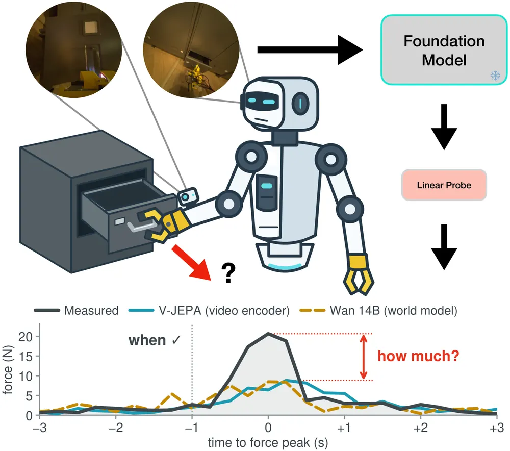
무슨 문제인가
world model과 VLA는 장면이 어떻게 바뀌고 어떤 행동을 할지 예측하지만, 힘 제어는 저수준 제어기에 맡기는 경우가 많음. 접촉이 많은 과제에서 힘을 잘못 주는 것이 robot foundation model의 실패 원인으로 보고되어 있음. 냉장고 문과 찬장 문처럼 궤적은 비슷해도 필요한 힘이 다른 경우가 있어서, 영상만으로 학습한 representation에 힘 정보가 들어 있는지가 문제임. 기존 probing 연구는 기하, 물리적 그럴듯함, 탄성·마찰 같은 성질을 다뤘지만 관측된 상호작용의 힘은 재지 않았음.
어떻게 푸나
저자는 force awareness를 세 능력으로 나눔: 접촉 시점 탐지, 접촉 중 힘 변화 추적, 힘 크기 복원임. 입력은 64 frame(7.5 Hz, 8.5초) 영상 구간이고, 2 frame씩 묶은 32개 time step마다 측정된 힘 벡터 크기의 평균(N)을 회귀 목표로 둠. 모델 weight는 고정하고, 중간 layer의 공간 token마다 같은 affine map으로 점수를 매긴 뒤 max pooling해 time step별 힘을 냄. 이 probe의 파라미터는 feature 차원 d에 bias 1개를 더한 d+1개이고, 시간 module이 없음. 영상 world model은 video autoencoder latent를 noise 0과 빈 text prompt로 diffusion transformer에 통과시켜 feature를 뽑음. VLA는 vision encoder부터 language model 각 block까지 image token을 뽑음. 세 능력은 각각 AUROC(접촉 step 판별), 접촉 구간 안의 Pearson r(변화 추적), 접촉 step 전체의 R²(크기 복원)로 잼. R²가 음수면 평균 접촉력을 상수로 내는 것보다 못하다는 뜻임. 같은 모델의 기본 checkpoint와 로봇 데이터로 추가 학습한 checkpoint 4쌍(예: Wan 2.1 I2V 14B와 이를 바탕으로 한 DreamZero)도 비교함.
결과
- Hoi!(사람이 힘 센서 달린 gripper로 서랍·문·찬장을 조작하는 영상과 힘 측정 dataset) gripper 시점에서 접촉 구간 안 힘 변화 상관 r은 V-JEPA 2.1이 0.527로 가장 높음. 14B world model Wan 2.1 I2V는 0.353, OpenVLA-7B는 0.152임. 힘 크기 R²가 0보다 2 표준오차 이상 높은 모델은 V-JEPA 2.1(0.166)뿐이고, 사람 시점에서는 모든 모델의 R²가 음수임.
- RH20T(손목 force-torque 센서가 있는 원격조작 로봇 조작 dataset, 140개 이상 과제)에서도 순서가 유지됨. V-JEPA 2.1의 r은 0.203, R²는 0.133이고, 영상 없이 과제별 평균 힘을 내는 task prior는 r 0.023임. π0와 GR00T N1.7의 r은 0.069와 0.032이고, 예측 힘의 변동폭이 측정값의 0.17배와 0.18배에 그침.
- 로봇 데이터 추가 학습은 힘 추적을 일관되게 올리지 못함. 4쌍 중 3쌍은 차이가 1 표준오차 안임. DreamZero는 Hoi! gripper 시점 r이 0.46으로 Wan I2V 14B의 0.35보다 높지만, RH20T에서는 0.15로 0.18보다 낮음.
- V-JEPA 2.1을 RH20T 힘 label로 LoRA fine-tuning하면 RH20T r이 0.19에서 0.33으로, R²가 0.10에서 0.23으로 오름. 이 실험은 마지막 block을 probe하므로 시작값이 둘째 불릿의 주 표 값과 다름. RH20T에서 학습한 readout을 Hoi! gripper 시점에 그대로 쓰면 r이 LoRA encoder에서 0.21, 고정 encoder에서 0.03임. 다만 LoRA encoder의 R²는 -0.92로, 힘의 시간 변화만 옮겨 가고 크기는 옮겨 가지 않음.
한계
오프라인 dataset 두 개에서 probe 정확도만 쟀고, 실로봇 제어나 policy 성능과의 관계는 실험하지 않음. Hoi!는 사람이 손으로 gripper를 든 데이터이고 평가 window가 260개라 R² 표준오차가 모델 간 차이만큼 큼. 선형 probe만 써서 비선형 readout으로 더 많은 힘 정보가 나오는지는 확인하지 않았고, V-JEPA 2.1과 DreamZero가 나은 이유는 저자의 가설로만 제시됨. 코드 공개 여부는 본문에서 확인 불가.
누리랩 연구와의 연결
- 현재 영상 world model과 VLA feature에 힘 크기 정보가 거의 없다는 결과는, contact-rich manipulation의 failure detection을 영상 world model만으로 하기 어렵다는 근거가 됨. 힘·tactile 신호를 world model 학습 목표에 넣는 연구의 동기로 쓸 수 있음.
- 고정 feature, max pooling 선형 probe, AUROC·r·R² 세 지표로 이뤄진 평가 절차는 우리가 학습한 world model이나 VLA encoder에 물리량이 들어 있는지 점검하는 도구로 그대로 쓸 수 있음.
9
68점
DriftWAM: Faster World-Action Models via Action-Aware Video Drifting
World Model
relevance 9/10
Computer Vision and Pattern Recognition (cs.CV)
영상을 먼저 예측하고 그 영상에 맞춰 행동을 만드는 world-action model을 1단계 생성기로 증류할 때, 영상끼리의 유사도를 그 영상이 만드는 행동까지 함께 보고 재도록 바꿈. RoboTwin 2.0 50개 과제에서 영상·행동을 각각 1단계로 생성하는 설정(1v/1a, teacher 대비 21.46배 빠름)의 평균 성공률이 Flash-WAM의 76.21%에서 82.19%로 오름.
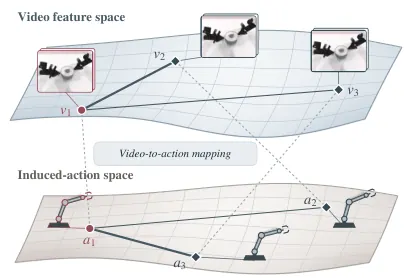
무슨 문제인가
WAM(world-action model)은 미래 영상을 diffusion이나 flow matching으로 예측하고 그 영상을 조건으로 robot action을 만듦. 영상과 행동을 모두 수십 단계 denoising으로 뽑으므로 행동 한 덩어리를 만드는 데 RTX 4090에서 약 4.8초가 걸려 closed-loop 제어에 느림. 기존 few-step 증류인 Flash-WAM은 영상 쪽에 LCM(latent consistency model) 계열 consistency distillation을 그대로 써서 teacher 영상과 겉모습이 닮도록만 학습함. 저자들은 영상이 행동을 이끄는 중간 표현일 뿐인데, 겉보기에 가까운 영상과 행동을 비슷하게 만드는 영상이 자주 다르다고 지적함. 부록 실험에서 후보 2개 중 시각적으로 가까운 영상과 행동이 가까운 영상이 41.37%의 경우에서 서로 달랐음.
어떻게 푸나
DriftWAM은 drifting(생성 샘플을 학습 중 kernel 가중치로 목표 샘플 쪽으로 끌고 다른 생성 샘플에서 밀어내어 1단계 생성기를 학습하는 분포 정합 방법)을 영상 증류에 씀. 입력은 관측·이전 행동·언어 지시로 된 context이고, 1단계 student가 영상 후보 4개를 만들며 teacher가 미리 offline으로 뽑은 영상-행동 쌍 4개를 목표로 둠. 두 영상의 시각 거리는 고정된 teacher 영상 branch의 19번째 Transformer block 특징으로 잼. 행동 거리는 고정된 teacher 행동 branch에 같은 noisy action을 넣고 두 영상을 조건으로 했을 때 나온 flow velocity의 차이로 잼(action response). 두 거리를 합친 joint kernel이 끌어당김과 밀어냄의 가중치를 정하는 것이 action-aware video drifting임. 같은 kernel로 student 영상마다 가장 잘 맞는 teacher 영상을 고르고, 둘의 action response 차이를 줄이는 손실(action-guided video regularization)로 행동 수준 gradient를 영상 생성기에 직접 흘림. 행동 branch는 Flash-WAM과 같은 consistency distillation과 flow matching 손실로 따로 학습함.
결과
- RoboTwin 2.0(양팔 조작 과제 50개, 장면·조명·배경을 흔드는 Randomized split 포함)에서 영상 1단계·행동 1단계(1v/1a) 평균 성공률이 Flash-WAM 76.21%, DriftWAM 82.19%임. 같은 조건 teacher LingBot-VA(25v/50a)는 90.77%이고, 두 증류 모델의 속도는 teacher 대비 21.46배로 같음. 과제 길이 구분(Horizon 1~3) 중 가장 긴 Horizon=3 과제의 Randomized split에서는 44.40%에서 65.80%로 21.4퍼센트포인트 차이가 남.
- 추가 학습량 효과를 가른 대조 실험에서, 같은 Flash-WAM checkpoint를 원래 목적함수로 500 step 더 학습하면 1v/1a 평균 76.40%, DriftWAM 목적함수로 500 step 학습하면 83.20%임(1,000 episode 평가).
- 구성요소 ablation(1v/1a)에서 단순 video drifting만 쓰면 79.10%이고, joint kernel을 더하면 80.57%, action-guided video regularization까지 더하면 82.19%임. 시각 거리로만 짝을 고른 regularizer는 79.33%로 거의 오르지 않아, 행동을 보고 짝을 고르는 부분이 효과의 대부분을 냄.
- LIBERO(시뮬레이션 단일팔 조작 과제 4개 suite, 각 10개)에서 1v/1a 평균이 96.9%로 Flash-WAM 논문 보고값 95.1%보다 높음. 실로봇 AgileX Piper 팔 과제 3개(과제당 20회)에서 1v/2a 평균 성공률이 DriftWAM 45.0%, Flash-WAM 40.0%, 단계만 줄인 teacher 25.0%, 3v/10a teacher 53.3%임.
한계
실로봇은 과제 3개·과제당 20회이고 Flash-WAM과의 차이는 과제당 1~2회 성공 차이라 통계적으로 약함. LIBERO 비교는 Flash-WAM checkpoint가 없어 초기화가 다르고 상대 논문 보고값과 비교함. 검증은 영상을 먼저 만들고 행동을 뒤에 만드는 cascade WAM인 LingBot-VA 하나뿐이고, 학습 시간이 Flash-WAM의 약 3배(24시간 대 8시간)이며 teacher 쌍 생성에 127 GPU 시간이 별도로 듦. 본문에 코드 공개 주소는 없음.
누리랩 연구와의 연결
- world model이 만든 영상을 픽셀 충실도가 아니라 그 영상이 policy 출력에 주는 영향으로 평가하는 거리(action response)를 제시함. world model 기반 test-time planning이나 failure detection에서 상상 rollout의 품질을 재는 지표로 가져다 쓸 수 있음.
- WAM 계열 policy를 실로봇에 올릴 때 행동 생성 지연을 약 4.8초에서 약 0.22초로 줄이는 증류 방법이라, 누리랩이 video 기반 VLA를 쓸 때 추론 속도 문제의 비교 기준이 됨.
10
68점
When to Respond, Where to Ground: Streaming 3D Affordance Grounding
3D Vision
relevance 8/10
Computer Vision and Pattern Recognition (cs.CV)
RGB-D 영상이 계속 들어오는 중에 요청을 받으면, 언제 답할지와 어느 프레임의 어느 3D 부품을 가리킬지를 grounding 모델의 patch 점수 하나로 함께 정하는 문제와 방법을 제시함. 제때 맞는 프레임으로 답했을 때만 mask IoU를 인정하는 StreamIoU가 15초 스트림에서 30.14%로, 답할 시점을 Qwen3-VL-4B에 맡긴 조합의 21.43%보다 높음.
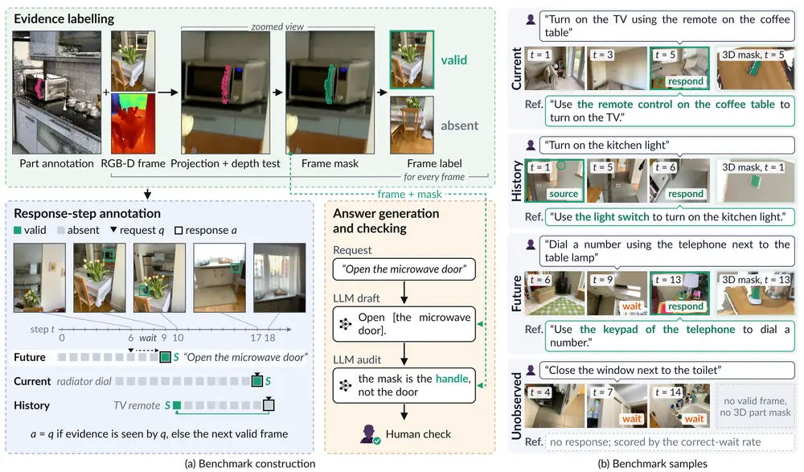
무슨 문제인가
기존 3D affordance grounding(손잡이, 스위치처럼 과제 수행에 필요한 기능 부품을 3D로 찾는 일)은 장면 전체를 다 본 뒤에 답한다고 가정함. 실제 로봇은 방을 둘러보는 도중에 요청을 받고, 그 순간 목표 부품은 이미 지나갔거나 아직 안 보였을 수 있음. 너무 일찍 답하면 엉뚱한 부품을 고르고, 불필요하게 기다리면 응답이 늦어짐. streaming VLM은 답할 시점을 정하지만 출력이 텍스트뿐이고, 별도 판단 모델을 grounding 모델 앞에 붙이면 판단 모델은 실제로 mask를 만들 근거와 무관하게 시점을 정함.
어떻게 푸나
StreamAff는 Ground3D-LMM(Qwen3-VL-4B 기반 3D grounding 모델)을 스트림 입력으로 확장함. 각 RGB-D 프레임은 들어올 때 한 번 3D 정보가 섞인 visual token 176개로 저장됨. 요청이 오면 pointing head가 읽은 프레임들의 모든 patch와 '기다림' 선택지를 한 softmax로 함께 점수 매김. patch 확률의 합이 기다림 확률보다 크면 답하고, 가장 높은 patch가 속한 프레임을 근거 프레임으로 고름. 읽는 순서는 conditional look-back policy를 따름: 요청 시점에 현재 프레임만 먼저 보고, 기다림이 나오면 저장된 과거 프레임 전체를 한 번 훑고, 그래도 기다림이면 이후 새 프레임만 하나씩 봄. 답이 정해지면 답 문장 속 부품 구절의 hidden state로 근거 프레임의 3D 점 위에 mask를 만듦. 이때 zoom-and-refine grounding이 구절과 잘 맞는 영역을 고해상도로 다시 encoding하고, 주변 26개 voxel과 정보를 주고받아 voxel별로 mask를 보정함.
결과
- StreamFun3D는 저자들이 SceneFun3D 실내 RGB-D 스캔으로 만든 benchmark로, 목표가 현재·과거·미래에 보이거나 끝까지 안 보이는 네 경우로 나뉨. 지표 StreamIoU는 제때 답하고 근거 프레임이 맞을 때만 mask IoU를 인정함. 15초 스트림에서 StreamAff 30.14%, 같은 mask decoder를 쓰고 시점·프레임 결정만 Qwen3-VL-4B에 맡긴 조합은 21.43%임. 30초 스트림은 28.46% 대 19.14%임.
- 15초 스트림에서 요구 시점에 정확히 답한 비율은 76.9%로, Qwen3-VL-8B 판단기 52.9%, 4B 판단기 57.1%보다 높음. 목표가 요청 뒤에야 보이는 Future 경우의 StreamIoU는 23.30% 대 13.95%(4B)이고, 요청 시점에 바로 답하는 방식은 0%임. 반면 끝까지 안 보이는 경우 올바르게 기다린 비율은 76.5%로 8B 판단기의 79.5%보다 낮음.
- wait supervision은 프레임별 가시성 라벨로 답할 때와 기다릴 때를 가르치는 학습임. 구성 요소 제거 실험(15초)에서 이것만 더하면 StreamIoU가 14.51%에서 18.94%로, zoom-and-refine만 더하면 23.31%로 오름. 둘 다 쓰면 30.14%임. zoom-and-refine은 시점과 무관한 mIoU를 23.62%에서 36.16%로 올림.
- ScanNet++ 평가(56개 장면, 답할 수 있는 요청 220개)에서 StreamIoU는 24.17%로 기존 3D affordance grounding 방법 Fun3DU의 16.63%, 8B 판단기 15.30%보다 높음. 실험은 기록된 실내 스캔 영상 재생만이고 실로봇 실험은 없음. 본문에 코드·프로젝트 주소는 없음.
한계
요청 이후에는 새 프레임을 하나씩만 읽으므로, 요청 전에 본 기준 물체와 나중에 나타나는 목표 부품을 엮어야 하는 요청은 풀지 못함. 15초 스트림 앞에 프레임 60개를 붙여 75초로 늘리면 Future StreamIoU가 6.66퍼센트포인트, 올바른 기다림 비율이 14.8퍼센트포인트 내려감(각각 42개, 27개 요청). 전체 모델의 mIoU도 37.25%(15초 스트림)에 그치고, 평가 시점 라벨은 카메라 pose와 깊이로 자동 생성한 가시성 판정에 기댐.
누리랩 연구와의 연결
- 로봇이 탐색 중에 요청을 받아 과거 관측을 다시 꺼내 쓸지, 더 볼 때까지 기다릴지 정하는 문제로, robot memory와 active perception 연구의 평가 틀로 쓸 수 있음. 다만 카메라 궤적은 고정이라 시점을 직접 고르는 NBV로 확장하는 것은 남은 과제임.
- '기다림'을 patch 점수와 같은 softmax에 넣어 근거 없이는 답하지 못하게 한 설계는, manipulation 전 단계에서 목표 부품 grounding이 불확실할 때 실행을 미루는 failure detection 장치로 옮겨 볼 만함.
11
66점
Event-WAM: Learning to Act with Event-Derived Futures
World Model
relevance 9/10
Computer Vision and Pattern Recognition (cs.CV)
RGB 시연 영상에서 합성한 event(픽셀 밝기 변화) 프레임을 world action model의 미래 예측 목표로 RGB와 함께 학습시킴. 실제 SO-101 로봇 4개 과제의 평균 성공률이 RGB만 쓰는 Simple-WAM의 65.5%에서 79.0%로 오름.
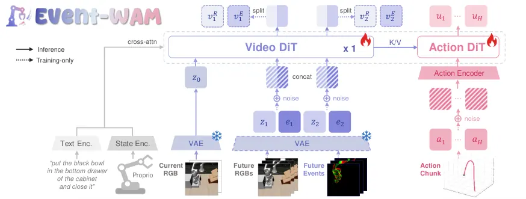
무슨 문제인가
WAM(World Action Model)은 미래 영상 예측을 함께 학습해 로봇 action 생성을 돕는 모델임. 최근 Simple-WAM처럼 추론 때 미래 영상을 만들지 않고 학습 때만 미래 예측을 쓰는 방식이 나오면서, 무엇을 미래 목표로 삼아야 action 학습에 도움이 되는지가 질문이 됨. RGB 미래 예측은 바뀌지 않는 배경까지 촘촘히 맞춰야 해서 움직임과 변화를 따로 강조하지 않음. event camera 신호는 변화만 남기지만, 기존 로봇 연구는 event를 추론 때 입력으로 써서 event camera가 필요했음.
어떻게 푸나
Event-WAM은 Simple-WAM 위에 event 기반 미래 목표를 더한 모델임. 먼저 RGB 시연 영상을 v2e(영상을 event stream으로 바꾸는 simulator)로 변환하고, 미래 구간을 시간 bin으로 나눠 픽셀마다 ON과 OFF event 개수를 셈. 이 개수에 log를 씌워 ON, OFF, 합의 3채널 pseudo-RGB 프레임으로 만들고, 고정된 Wan2.2 RGB video VAE로 그대로 인코딩함. 그래서 event 전용 encoder를 따로 학습하지 않음. video DiT는 RGB 미래 latent와 event 미래 latent를 채널 방향으로 이어 붙인 입력을 받고, 둘 각각에 flow matching loss를 줌. action DiT는 video DiT의 key/value를 받아 32-step action chunk를 denoising함. 추론 때는 미래 RGB와 event 자리를 순수 noise로 채워 video DiT를 한 번만 통과시키므로 event camera도, 미래 영상 생성도 필요 없음.
결과
- 실제 SO-101 팔로 과제 4개(펜을 컵에 넣기, 인형 3개 모으기, 서랍 열기, 큐브 쌓기)를 과제당 시연 100개로 학습함. 표준 조건 평균 성공률이 Simple-WAM 65.5%에서 79.0%로 오름(방법당 200회). 서랍 열기는 48.0%에서 74.0%로 오름.
- 같은 실로봇에서 학습 때 없던 교란 4종(카메라 위치, 배경, 센서 noise, 방해 물체)을 줌. 평균 성공률이 26.9%에서 45.0%로 오름(방법당 160회). 표준 조건과 교란 조건의 전체 평균 차이는 둘 다 Fisher exact test에서 p<0.01임. 평가는 blind가 아님.
- LIBERO-Plus(LIBERO 조작 과제에 카메라·조명·배경 등 교란을 건 강건성 평가 모음)의 지시문 수정 버전에서 평균 성공률이 84.0%에서 85.9%로 오름. 원래 LIBERO(조작 과제 40개) 성공률은 Event-WAM 98.8%, Simple-WAM 98.9%로 같은 수준임. RGB 미래 loss를 빼고 event loss만 쓴 경우도 85.8%임.
- 시뮬레이션 이득은 benchmark에 따라 다름. RoboTwin 2.0(양팔 조작 과제 50개)의 깨끗한 환경 학습, 무작위 환경 평가에서는 2.7%에서 1.9%로 내림. 교란 7종을 건 RoboTwin 2.0-Plus에서는 평균 43.6%에서 46.1%로 오름.
한계
event는 실제 event camera가 아니라 RGB에서 합성한 것이고, bin 안의 세밀한 시간 순서는 버림. 시뮬레이션 이득은 많아야 2.5퍼센트포인트이고, seed 반복이나 신뢰구간은 본문에서 확인 불가함. 그래서 RGB 프레임 차이를 미래 목표로 쓴 변형(RGB-Diff, LIBERO-Plus 85.2%)과의 차이는 가르기 어려움. 실로봇은 SO-101 팔 한 대의 과제 4개뿐이고, 코드 공개 주소는 본문에서 확인 불가함.
누리랩 연구와의 연결
- WAM에서 미래 예측 정확도가 아니라 어떤 미래 목표를 주느냐가 policy 강건성을 바꾼다는 결과임. Event 목표에서 미래 예측 PSNR은 RGB-only와 같지만 성공률은 오름. world model을 VLA 보조 학습 신호로 쓰는 연구에서 목표 설계 비교 대상으로 쓸 수 있음.
- 센서 noise에서 미래 key/value를 깨끗한 값으로 바꾸면 Simple-WAM 성공률이 33%에서 92%로 오른다는 분석이 있음. 교란 아래 실패의 원인을 내부 feature 단위로 찾는 failure diagnosis 방법으로 참고할 만함.
12
63점
A Failure-Driven Data Flywheel for Post-Training Vision-Language-Action Models
VLA
relevance 10/10
Artificial Intelligence (cs.AI)
주행 VLA가 실패하는 조건을 3DGS로 복원한 실제 장면에 보행자·표지판을 넣어 만들고, 실패율이 높은 조건에 데이터를 더 배정하는 반복 post-training을 제안함. 가려진 보행자 돌출 시험 세트의 충돌 없는 비율이 ReCogDrive에서 0.390에서 0.765로 오름.
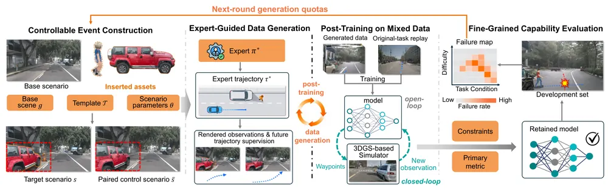
무슨 문제인가
공개된 pretrained VLA를 자기 플랫폼에 맞춰 쓰는 팀은 모델이 특정 행동 요구사항을 못 지키는 경우를 자주 만남. 기존의 실패 기반 데이터 수집 방법은 이미 가진 주행 로그나 그 로그 위의 policy 행동에서 실패를 찾음. 그래서 필요한 사건이 로그에 아예 없으면 실패가 드러나지 않고, 대규모 차량 fleet가 없는 팀은 데이터를 모을 방법이 없음. 또 성공률 같은 집계 지표는 어떤 세부 행동이 부족한지 가리고, 학습이 진행되면 실패 양상도 바뀜.
어떻게 푸나
목표 능력을 장면 template, 장면 parameter 공간, 시범을 주는 expert, 행동별 metric 묶음으로 정의함. nuScenes 로그를 OmniRe(3D Gaussian Splatting 기반 동적 도시 장면 복원)로 복원하고, 가리는 차량과 그 뒤에서 튀어나오는 보행자 같은 3D asset을 넣어 로그에 없던 target 장면을 만듦. 난이도는 보행자가 처음 보일 때의 TTC(time to collision)로 정하고, 보행자만 뺀 paired control 장면을 함께 만듦. rule-based expert가 두 장면에서 궤적을 만들고, 그 궤적을 따라 렌더링한 카메라 관측과 이후 waypoint를 지도 학습 쌍으로 씀. 생성 데이터는 원래 nuScenes 데이터와 섞어 학습하고, 매 round 개발 세트에서 감속·제동·정지 유지·재출발·불필요 제동을 따로 평가해 제약을 만족하는 checkpoint를 고름. TTC 구간별 실패율로 failure map을 갱신하고, 다음 round의 생성 할당량을 실패율에 비례해 나눔. post-training 대상은 주행 VLA인 AutoVLA(Qwen2.5-VL-3B 기반)와 ReCogDrive(고정된 InternVL3-2B에 diffusion planner를 붙인 모델)임.
결과
- 가려진 보행자 돌출 과제의 open-loop 결과임. 주 지표는 가려진 곳에 다가가 보행자가 나타나고 제동하기까지의 구간(critical phase)에서 충돌하지 않은 비율임. 시험 세트(학습·선택에 쓰지 않은 nuScenes 장면 20개, target 200개)에서 이 비율이 5 round 뒤 AutoVLA 0.261에서 0.579로, ReCogDrive 0.390에서 0.765로 오름. paired control의 불필요 제동 비율은 최대 0.013임. 향상은 주로 가려진 곳에 닿기 전 미리 감속하는 행동에서 나옴. 보행자가 나온 뒤의 추가 제동 지표는 ReCogDrive 기준 0.045에서 0.185로 올랐지만 여전히 낮음.
- 같은 누적 학습 step(100k)에서 ReCogDrive를 비교함. 매 round failure map을 갱신하는 방식이 0.751로, 균등 할당과 무작위 할당(둘 다 0.691)보다 0.060 높음. 첫 round map을 고정한 방식은 0.723임. 다만 이 ablation 수치는 한 번 실행 결과이고 seed 반복은 본문에서 확인 불가함.
- paired control 샘플을 빼면 충돌 없는 비율이 0.751에서 0.944로 오름. 그러나 control 장면 진행률이 0.669에서 0.224로 내려가, policy가 보행자 유무와 상관없이 제동하도록 학습된 것으로 보임. 세부 행동 평가가 없으면 이런 policy를 개선으로 오인함을 보인 결과임.
- 실차(Ford E-Transit, 주차장, 어린이 크기 보행자 더미) closed-loop에서 추가 실제 학습 없이 ReCogDrive를 배치함. 안전 통과가 base 1/5회에서 open-loop post-training 후 4/5회로 늘었음. 렌더링한 복원 장면 안에서 closed-loop로 2 round post-training한 checkpoint는 실차에서 2/5회에 그침.
한계
실험은 자율주행 두 시나리오(가려진 보행자, 정지 표지판 교차로)와 rule-based expert에 한정되고, 로봇 조작 적용은 문제 정의 수준의 언급뿐임. 실차 평가는 한 모델, 한 장면, 조건당 5회라 통계적 근거가 약함. 보행자 과제를 배운 checkpoint에서 정지 표지판 과제를 이어 배우면, 정지선 앞 정지 비율이 base에서 바로 배운 경우보다 낮음(ReCogDrive 0.358 대 0.667). 코드·데이터 공개 여부는 본문에서 확인 불가함.
누리랩 연구와의 연결
- 실패율 map으로 다음 데이터 생성량을 정하는 루프는 manipulation VLA의 failure detection과 targeted data collection에 그대로 옮겨 볼 수 있는 구조임. 3DGS로 복원한 장면에 물체를 넣어 실패 조건을 만드는 방식은 object-centric 3DGS 기반 데이터 증강과 이어짐.
- paired control 없이는 지나치게 보수적인 policy가 지표상 좋아 보인다는 결과는, 로봇 policy의 failure recovery 평가를 설계할 때 대조 장면을 함께 두어야 하는 근거가 됨.
13
62점
Loop4D: Embodied World Modeling with 4D VAEs and Looped Diffusion Transformers
World Model
relevance 10/10
Computer Vision and Pattern Recognition (cs.CV)
로봇 조작 장면의 미래 RGB 영상과 3D 좌표 지도(pointmap)를 함께 생성하는 4D world model로, 로봇 팔 움직임을 보존하는 VAE와 중간 Transformer 층을 반복 적용하는 diffusion 구조를 결합함. 1.3B 모델의 시뮬레이션 과제 생성 영상 품질(gFVD)이 449.33으로, 같은 data로 fine-tuning한 Wan2.1-14B의 574.92보다 좋음.
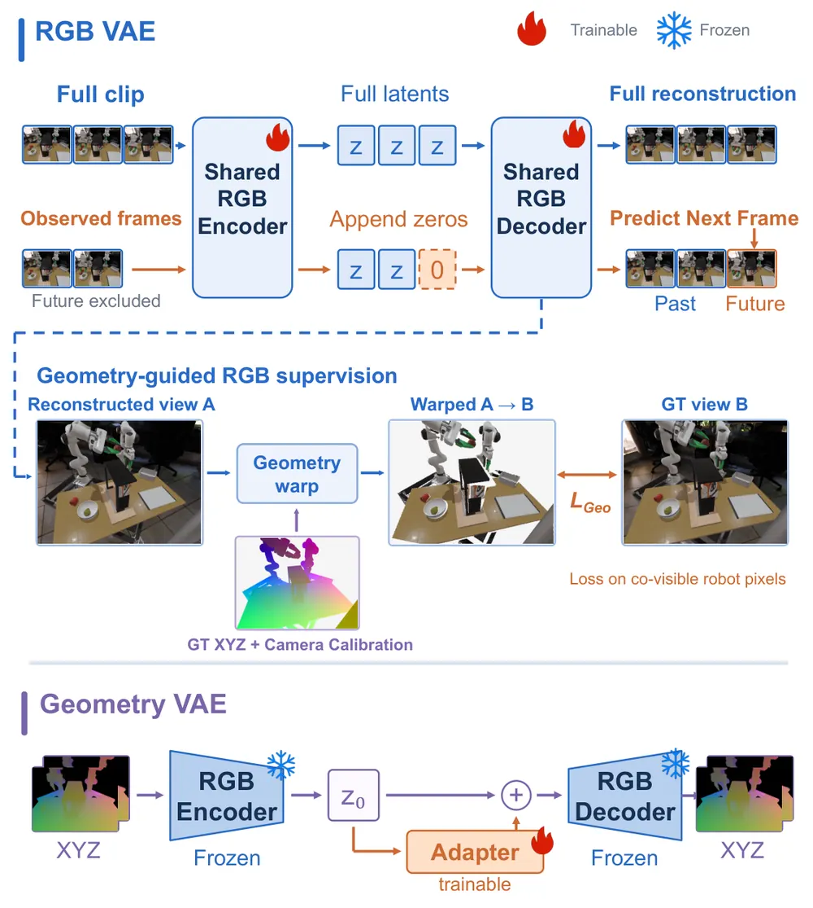
무슨 문제인가
로봇 조작 결과를 미리 보려면 world model이 겉모습과 3D 형상 변화를 함께 예측해야 함. 범용 video VAE는 시공간 압축 과정에서 빠르게 움직이는 로봇 팔 주변에 artifact를 만들고, RGB 복원 loss만으로는 metric 형상을 직접 학습하지 않음. RGB와 형상을 함께 예측하려면 생성 용량이 커야 하는데, 기존 4D 생성 모델은 14B급 큰 backbone에 기대는 경우가 많음. 그래서 저자들은 parameter 수를 늘리지 않고 계산을 더 써서 품질을 올리는 길을 찾음.
어떻게 푸나
Loop4D는 첫 RGB-D 관측과 텍스트 지시를 받아 미래 RGB frame과 카메라 좌표계 XYZ 지도 영상을 출력함. RGB VAE는 전체 clip 복원과 함께, 앞부분 frame의 latent 뒤에 0을 붙여 뒷부분 frame을 맞히는 predictive reconstruction을 확률적으로 섞어 학습함. 여기에 정답 depth와 camera calibration으로 한 시점의 복원 영상을 다른 시점으로 warp해, 두 시점 모두에서 보이는 로봇 픽셀의 RGB 오차를 줄이는 loss를 더함. 형상용 geometry VAE는 학습된 RGB VAE의 encoder와 decoder를 고정하고, latent에 더하는 작은 residual adapter만 학습함. 두 VAE를 고정한 뒤 학습하는 Dual-Stream Looped Diffusion Transformer(LoopDiT)는 RGB와 XYZ의 hidden state를 따로 두되 가중치는 공유하고, 층마다 RGB 특징을 XYZ 쪽에 선형으로 더함. 한 번의 denoising 호출 안에서 중간 층 묶음을 R번 반복하며, 반복마다 예측을 supervise하고 로봇 영역 오차가 이전 반복보다 커지면 penalty를 주고, 작은 gate network가 RGB와 XYZ 각각의 갱신 크기를 0~1 사이로 정함.
결과
- Robot4DGen dataset(시뮬레이션 3개, 실제 4개 조작 과제의 multi-view RGB-D 시연 모음)에서 미래 영상을 생성함. 시뮬레이션 과제 gFVD(생성 영상과 실제 영상 분포의 거리, 낮을수록 좋음)는 Loop4D-1.3B 449.33, Wan2.1-14B 574.92, LTX-2.3 22B 502.82임. 실제 과제에서는 Wan2.1-14B가 668.84로 Loop4D-1.3B(738.77)와 5B(721.24)보다 좋음. 비교한 video 모델들은 RGB만 생성함.
- 형상 정확도인 depth AbsRel(depth 상대 오차, 낮을수록 좋음)은 시뮬레이션 과제에서 Loop4D-5B 0.0483, dataset과 같은 논문에서 나온 4D 생성 모델 Robot4DGen 0.1131임. 실제 과제에서는 0.0831 대 0.1473임.
- 반복 ablation 표(5B 모델)에서 중간 층을 2번 반복하면 gFVD가 618.03에서 511.16으로 내림. 이 표의 시뮬레이션·실제 과제 구분은 본문에서 확인 불가함. 대신 sample당 학습 계산량은 111.59에서 184.96 TFLOPs로, 50-step 추론 시간은 영상당 21.84초에서 29.40초로 늘어남. 로봇 영역 제약과 gate 없이 그냥 반복하면 581.69이고, 반복을 3회 이상으로 늘려도 일관된 개선은 없음.
- 생성 영상에서 궤적을 복원해 실행하는 Robot4DGen의 평가 절차를 따른 시뮬레이션 과제 3개, 과제당 10회 시행에서 평균 성공률은 Loop4D 33.3%, Robot4DGen 16.7%, Diffusion Policy 10.0%임. 30회 중 각각 10회, 5회, 3회 성공한 셈임.
한계
로봇 실행 평가는 시뮬레이션 과제 3개에 과제당 10회뿐이고 성공률도 낮아, 차이의 통계적 신뢰도가 약함. 실제 로봇 data는 영상 생성 지표로만 평가했고, Loop4D VAE의 RGB rFVD(복원 영상 분포 거리)는 22.77로, fine-tuning 전 사전학습 RGB VAE의 13.29보다 나빠짐. 실험은 Robot4DGen dataset 하나에서만 했고, 코드 공개 주소는 본문에 없음.
누리랩 연구와의 연결
- 예측 출력이 RGB와 metric pointmap 쌍이므로, 예측 형상과 실제 관측을 3D에서 비교해 조작 실패를 찾는 failure detection 연구의 world model로 쓸 수 있음.
- denoising step을 늘리는 대신 내부 층 반복으로 계산을 더 쓰는 구조라, world model 기반 test-time planning에서 계산 예산을 어디에 쓸지 정할 때 비교 대상이 됨. 같은 계산량에서 2회 반복이 step 증가보다 낫다는 결과는 그림으로만 제시됨.
14
60점
Best-of-$N$ Test-Time Steering Can Lead to Reward Hacking in Vision-Language-Action Models
VLA
relevance 8/10
NeurIPS 2026 (comments 표기)
Robotics (cs.RO)
고정된 π0.5에서 행동 후보 N개를 뽑고 verifier로 하나를 고르는 best-of-N steering에서, verifier에 오차가 있으면 N을 늘릴수록 verifier 점수만 오르고 실제 품질은 따라오지 않음을 시뮬레이션에서 보임. 프라이팬 놓기 과제에서 N을 5에서 75로 늘리자 예측 reward는 0.119에서 0.196으로 올랐고, 오차 없는 시뮬레이터로 다시 잰 reward(clean reward)는 0.0036에서 -0.0014로 내림.
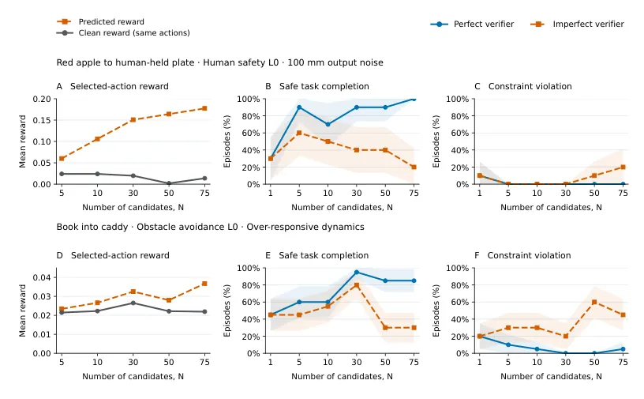
무슨 문제인가
RoboMonkey, VERITAS 같은 best-of-N test-time steering은 VLA를 다시 학습하지 않고 행동 후보 여러 개 중 verifier가 가장 높게 매긴 것을 실행함. 이 방식의 이득은 verifier가 후보 순위를 얼마나 정확히 매기느냐에 달려 있음. LLM에서는 불완전한 reward model로 고르면 N이 커질수록 실제 품질이 오르다가 내리는 현상이 알려져 있고, 이를 inference-time reward hacking이라 부름. 로봇에서 verifier 오차가 safety 위반과 과제 완료에 어떻게 이어지는지는 오차를 통제한 조건에서 잰 적이 없었음.
어떻게 푸나
LIBERO-Safety(안전 제약을 지키며 조작하는 시뮬레이션 benchmark)로 fine-tuning된 공개 π0.5 checkpoint를 고정하고, 재계획 시점마다 action chunk 후보 N개를 뽑음. verifier는 MuJoCo 시뮬레이터로 각 후보를 5 control step 굴린 예측 rollout을 만듦. 이 rollout에서 safety 점수(제약 위반 횟수에 비례한 감점)와 task-progress 점수(물체 접근·잡기·들기·목표로 옮기기의 dense 항, sparse reward, 성공 보너스의 합)를 계산함. 두 점수를 0.5씩 더한 proxy reward가 가장 높은 후보를 5 step 실행하고 다시 뽑음. policy와 실행 환경은 그대로 두고 verifier 안에만 오차를 넣음. 첫째 오차는 예측 물체 위치에 표준편차 0.1m Gaussian noise를 더하는 output noise임. 나머지 둘은 actuator 세기·감쇠·마찰·물체 질량을 바꿔 팔이 약하게 또는 강하게 반응하게 하는 under-responsive·over-responsive dynamics임. 선택된 행동을 오차 없는 시뮬레이터로 다시 채점한 값을 clean reward라 부르고, N이 커질 때 proxy reward만 오르고 clean reward나 episode 결과가 따라오지 않으면 reward hacking으로 판정함. 완화책으로 점수에 softmax를 씌워 확률적으로 고르는 soft best-of-N과, clean reward 기대값이 최대가 되게 safety·task 가중치를 맞추는 shared-weight calibration을 시험함.
결과
- LIBERO-Safety(물체 잡는 방식 제약과 장애물·사람 손 회피 제약을 지키며 조작하는 시뮬레이션 benchmark)의 60개 과제-난이도 조합 전체를 봄. N을 1에서 75로 늘릴 때 안전 완료율(과제 완료와 무위반을 함께 만족한 episode 비율)은 perfect verifier에서 43.8%에서 49.8%로, 오차 있는 verifier에서 43.8%에서 47.0%로 오름. 위반율은 각각 10.3%에서 4.5%, 10.3%에서 9.1%로 내림. 평균으로는 성능이 내려가지 않고 이득이 줄어드는 정도임.
- 성능이 실제로 내려간 사례는 저자가 결과를 보고 고른 그룹에서 나옴. over-responsive dynamics에서 사람 안전(human safety) 과제 중 난이도 3단계(L0~L2)의 L2 과제 5개를 봄(N 값마다 50 episode). 안전 완료율이 N=30의 82%에서 N=75의 70%로 내리고, 위반율은 10%에서 18%로 오름. 저자도 이 그룹들이 사후 선택이라 독립적 확인이 아니라고 밝힘.
- 원인 분석은 난이도 L0~L1인 40개 조합에서 함. output noise에서 verifier가 안전하다고 예측했지만 실제로 위반한 선택이 N=5의 95회에서 N=75의 161회로 늘어남. dynamics 오차에서도 같은 수가 under-responsive에서 17회에서 50회로, over-responsive에서 16회에서 42회로 늘어남. 예측 위반을 걸러내는 safety-first 규칙으로는 이런 선택을 막을 수 없음.
- N=75에서 soft best-of-N(β=16, β가 클수록 hard max에 가까워짐)은 under-responsive dynamics의 안전 완료율을 hard max의 48.7%에서 53.0%로 올림. output noise에서는 44.5%에서 45.8%로 차이가 작음. calibration은 held-out 57개 조합에서 over-responsive는 52.3%에서 53.9%로 조금 오르고, under-responsive는 54.2%에서 48.8%로 오히려 내림.
한계
모든 실험이 시뮬레이션이고 실로봇 실험은 없으며, policy도 π0.5 하나뿐임. verifier 오차는 MuJoCo 파라미터와 위치 noise로 인위적으로 넣은 것이라, 실제로 쓰이는 학습된 verifier의 오차 구조와 같다는 근거는 없음. 60개 조합 평균에서는 N을 늘려도 안전 완료율이 내려가지 않았고, 뚜렷한 역전은 사후에 고른 10~50 episode 규모 그룹에서만 보임. 코드 공개 주소는 본문에 없음.
누리랩 연구와의 연결
- test-time optimization 연구에서 후보 샘플링과 verifier 선택을 쓸 때, N을 키우며 proxy 점수와 정답 점수의 차이를 함께 재는 진단 절차로 가져다 쓸 수 있음. world model을 verifier로 쓰면 그 world model의 오차가 같은 방식으로 선택에 이용될 수 있다는 근거가 됨.
- failure detection 관점에서, verifier가 안전하다고 했지만 실제로 위반한 선택(missed unsafe choice)을 따로 세는 방식은 detector가 놓친 실패를 측정하는 지표로 쓸 수 있음.
15
46점
WhatIf: Counterfactual World Models over Action-Grounded Causal Graphs for Robotic Manipulation
World Model
relevance 10/10
Artificial Intelligence (cs.AI)
후보 행동들의 미래를 하나의 공유된 물리 상황 아래에서 함께 굴려 보는 counterfactual world model(WhatIf)을 제안함. 이 위에서 같은 상황 안의 기대 이득과 계획 변경이 해가 될 확률을 함께 보고 계획을 고르는 planner(CAP)도 제안함. 다만 실험 결과는 하나도 없고 실험 계획만 적혀 있음.
무슨 문제인가
기존 world model은 실제로 실행한 행동의 전이만으로 학습하므로, 행동마다 미래의 주변 분포(marginal)만 따로 표현함. 그런데 로봇의 결정은 같은 물리 상황에서 다른 행동을 했으면 더 나았을지를 비교하는 일임. 행동마다 따로 예측하면 행동 차이와 상황(질량, 마찰, 잡음) 차이가 섞여 비교가 흔들림. 기존 causal world model은 고정된 latent DAG나 전역 context 벡터를 써서, 물체 수가 바뀌거나 행동이 새 접촉을 만드는 경우를 표현하기 어렵다고 저자는 지적함.
어떻게 푸나
WhatIf는 과거 관측과 행동 기록에서 계층형 latent physics(장면, 물체별 질량·관성, 물체 쌍별 마찰·compliance)와 전이 잡음을 추론함(abduction). 후보 행동마다 물체 노드 위에 sparse graph를 새로 만들며, gate가 어떤 경로가 켜지는지를, weight가 그 경로의 부호 있는 세기를 정함. 이 그래프는 물체 단위에서 상태 factor 단위로 한 번 더 나뉘고, 물체 type별로 공유된 함수로 만들어져 물체 수가 달라도 쓸 수 있음. 모든 후보 행동은 같은 물리 상황 하나를 공유한 채 각자의 그래프로 rollout되며, 반사실 예측은 실제 관측된 다음 상태에 행동 간 차이를 더하는 방식으로 고정함(anchoring). counterfactual 정답 없이 학습하려고, 다른 행동의 반사실에서 상황을 다시 추론해 실제 결과가 복원되게 하는 round-trip loss를 둠. CAP(Counterfactual Advantage Planning)는 샘플 기반 궤적 최적화기(CEM, MPPI) 안에서 현재 계획 대비 이득을 같은 상황 표본들로 짝지어 추정하고, 해가 될 확률이 ε를 넘는 계획 변경은 거부함. 실행 뒤에는 사후 최적 행동과 regret을 계산해 재시도 계획, 물리 posterior, critic 없는 advantage-weighted regression policy 학습에 씀.
결과
- 4절은 CausalWorld(질량·크기 등을 제어해 바꿀 수 있는 시뮬레이션 조작 benchmark)와 Meta-World·ManiSkill 계열 환경에서 simulator를 복제해 짝지은 반사실을 만드는 평가 계획만 적음. 수치, 표, 그림 결과는 본문에서 확인 불가임.
- 이론 결과 하나: 실제 행동 데이터는 행동별 주변 분포와 평균 효과만 정하고, 개별 효과와 해가 될 확률은 정하지 못함을 두 모델 반례로 보임. 평균 효과로 anchoring하면 오차가 개별 효과의 조건부 분산과 같아짐.
- 이론 결과 둘: 두 계획을 같은 상황 표본으로 비교하면 독립 표본보다 추정 분산이 1−ρ배로 줄어듦(ρ는 두 계획 return의 상관, 두 분산이 같을 때). 행동과 무관한 모델 오차는 비교에서 상쇄됨.
- 관측 전이가 개입 전이와 같아지는 조건(숨은 행동 confounding 없음, positivity 등)을 backdoor 논증으로 정리함. 세 결과 모두 표준 인과추론 도구를 이 설정에 옮긴 것임.
한계
모델이 실제로 학습되는지, 반사실 정확도나 제어 성공률이 오르는지는 전혀 보이지 않았고 결론도 이를 검증할 연구 질문으로 남김. 시뮬레이션·실로봇 실험 모두 없고 코드 공개 언급도 없음. 짝지은 반사실 감독은 simulator 복제와 같은 random seed를 전제로 하므로 실로봇에서는 round-trip loss만 남는데, 이것만으로 coupling이 맞게 잡히는지는 보이지 않음.
누리랩 연구와의 연결
- counterfactual reasoning과 failure diagnosis에 바로 닿는 설계임. 사후 regret으로 행동 선택 때문에 생긴 실패와 어떤 행동으로도 못 피한 실패를 가르는 기준은 failure detection·recovery 연구의 정의로 가져다 쓸 만함.
- 같은 상황 표본으로 짝지어 후보를 비교하는 방식은 world model 기반 test-time planning에서 rollout 수를 줄이는 장치로 바로 실험해 볼 수 있음. 다만 논문 자체는 실험이 없어 근거로 인용하기 어려움.
오늘의 흐름
- world action model의 미래 표현 바꾸기: world action model(WAM)은 미래 장면을 예측한 뒤 그것을 바탕으로 행동을 만드는 모델임. 행동 전에 상상하는 미래를 전체 영상 대신 다른 형태로 바꾼 논문이 넷임. 움직이는 부분만 담은 소수의 token, 3D Gaussian으로 나타낸 장면 상태, RGB에서 합성한 event(픽셀 밝기 변화) 프레임이 각각 제안됨. 여러 단계 teacher WAM을 1단계 생성기로 줄이면서 영상이 만드는 행동까지 맞추는 증류도 나옴. Dynamic Forcing, SplatWAM, Event-WAM, DriftWAM
- world model이 실패와 물리량을 담는지 점검: 영상 world model이 접촉력의 크기를 거의 담지 못하고, 성공 시연 위주로 배우면 잡기 실패 장면을 못 그린다는 결과가 함께 나옴. 큰 video prior를 행동 조건 world model로 바꾼 연구도 팔 동작은 맞히지만 물체 상태 오차가 남음. RGB와 3D 좌표 지도를 함께 생성하는 Loop4D도 실제 로봇 data에서는 영상 지표로만 평가됨. Can Visual World Models See Force?, Beyond the Happy Path, Most of the Way There, Loop4D
- 판정자와 verifier를 믿어도 되는지: policy 개선 루프에서 새 policy를 남길지 정하는 judge, best-of-N에서 후보를 고르는 verifier, 실패 원인을 적는 코딩 agent의 오판을 각각 측정함. 실패율이 높은 조건에 학습 데이터를 더 배정하는 주행 VLA 연구도 실패 판정에 기대는 루프임. Keep or Roll Back?은 학습에 쓰는 판정과 채택을 정하는 판정을 나눠야 한다고 결론냄. Best-of-N Test-Time Steering, Skeptic, Failure-Driven Data Flywheel
- 기억을 써서 먼 목표와 늦게 오는 정보를 다루기: 학습 데이터의 frame graph를 subgoal 기억으로 써서 frozen world model의 장기 planning 성공률을 올린 연구가 있음. 영상이 들어오는 중에 받은 요청에 언제 답할지를 정하는 streaming affordance grounding도 같은 흐름임. 같은 물리 상황에서 후보 행동의 미래를 함께 굴려 계획을 고르는 WhatIf는 실험 없이 설계만 제시함. Graph Anchors, Streaming 3D Affordance Grounding, WhatIf
해볼 만한 연구
학습된 world model을 verifier로 쓸 때의 reward hacking
- 질문: best-of-N 선택의 verifier를 학습된 world model로 바꾸면, N을 늘릴수록 world model의 오차를 이용하는 후보가 뽑히는지 밝힘.
- 첫 실험: LIBERO(시뮬레이션 조작 과제 모음)에서 VLA 후보 행동 N개를 world model rollout으로 점수 매겨 고름. N을 1에서 64까지 늘리며 world model 점수와 시뮬레이터 실제 성공률의 차이를 재고, 실패 데이터로 post-training한 world model과 원래 world model을 비교함.
- 가장 가까운 연구: Best-of-N Test-Time Steering은 verifier 오차를 MuJoCo 파라미터로 인위적으로 넣었음. 이 연구는 실제 학습된 world model의 오차 구조를 대상으로 함.
실패 데이터로 고친 world model이 failure detection에 주는 이득
- 질문: 실패 궤적으로 post-training한 world model이 영상 지표뿐 아니라 VLA rollout의 실패 예측 정확도도 올리는지 밝힘.
- 첫 실험: 같은 VLA rollout 묶음에 대해 post-training 전후 world model의 예측 장면과 실제 관측 차이로 실패를 예측하고, AUROC와 실패 발생 전 경고 시점을 비교함.
- 가장 가까운 연구: Beyond the Happy Path는 물체 궤적 오차와 PSNR만 쟀고 policy 평가나 failure detection에 쓰지 않았음.
측정 기반 실행 로그를 sealed judge로 쓰는 실로봇 개선 루프
- 질문: 시뮬레이터 success predicate가 없는 실로봇에서, 센서로 잰 실행 로그를 policy를 고치는 쪽(improver)이 볼 수 없는 판정자(sealed judge)로 쓰면 keep/roll back 판정의 오채택이 줄어드는지 밝힘.
- 첫 실험: 실로봇 조작 과제 3개에서 VLA를 5세대까지 fine-tuning함. 세대마다 VLM judge 단독 판정과, 측정 로그로 표본을 하나씩 더하며 채택 여부를 검정하는 sequential test 판정의 false-positive rate를 사람 라벨과 비교함.
- 가장 가까운 연구: Keep or Roll Back?은 조작 실험의 sealed judge가 시뮬레이터 predicate였음. Skeptic이 실패 원인을 적을 때 근거로 쓰는 센서 측정 로그를 그 자리에 넣는 것이 차이임.
꼭 읽을 논문
- SplatWAM: action 조건으로 3D Gaussian 상태를 예측해 임의 시점 렌더링이 되는 world model이라 active perception과 object-centric 3DGS 연구의 비교 대상임.
- Keep or Roll Back?: VLA self-improvement에서 judge 오판을 세대별로 재는 절차와, 표본을 하나씩 더하며 채택을 검정하는 sequential test를 함께 제시함.
- Graph Anchors: goal cost(현재 상태가 목표에서 얼마나 먼지 매기는 값)가 어디서 틀리는지 planner 없이 offline으로 진단함. 추가 학습 없이 PointMaze-Medium 200 step 목표의 성공률을 13%에서 85%로 올림.
- Beyond the Happy Path: world model 학습 데이터에 실패를 넣어야 하는 이유를, 같은 장면에서 행동만 바꾼 쌍의 미래 차이를 재는 지표와 수치로 보임.
- Can Visual World Models See Force?: world model과 VLA feature에 힘 정보가 있는지 재는 probe 절차를 그대로 가져다 쓸 수 있음.